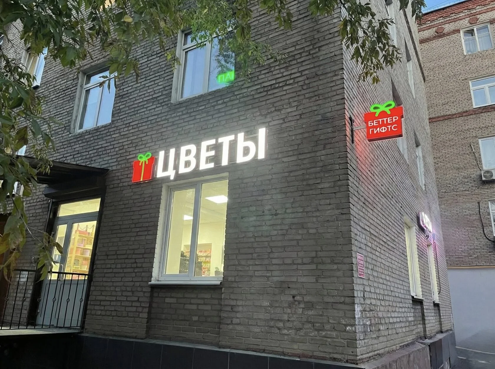

Главная/Студия на Ткацкой
Студия на Ткацкой
В апреле 2024 года мы открыли цветочную студию в районе Соколиная Гора. Приходите за букетом с витрины или собирайте свой вместе с флористом.


В студии
Храним цветы в камерах с контролем температуры. Для упаковки используем матовую плёнку, крафт, тишью и ленты. По запросу подпишем открытку, приложим подкормку, в холодное время утеплим букет.
Доставка и оплата
Сроки и стоимость
Работаем ежедневно с 08:00 до 21:00. В соседние с магазином районы доставляем от 15 минут, по Москве и области — от 30 минут. Время зависит от адреса и состава заказа.
- До 5 000 ₽ — по тарифу курьера.
- От 5 000 ₽ — бесплатно в радиусе 5 км от студии.
- От 10 000 ₽ — бесплатно в пределах МКАД.
- За МКАД стоимость уточняет менеджер.
При аномально высоких тарифах, в праздники и непогоду условия могут меняться. Точную сумму покажет корзина студии или рассчитает менеджер.
Сборка и согласование
Покажем собранный букет до передачи курьеру. В праздничные дни с высокой нагрузкой возможны исключения. При отсутствии сорта флорист согласует замену с сохранением гаммы и стоимости.
Сюрприз и ожидание
Можно оставить номер получателя, чтобы студия уточнила адрес. При доставке без звонка курьер едет по указанному адресу. Ожидание — 5 минут бесплатно, ещё до 10 минут оплачиваются отдельно. Повторная доставка оплачивается отдельно.
Цветочная подписка
Доставка внутри МКАД включена в тариф. Студия указывает скидки на самовывоз подписки — 1 000 ₽ для S, 1 500 ₽ для M, 2 000 ₽ для L. Условия выбранного периода уточнит менеджер.
Способы оплаты
Онлайн — банковская карта, СБП, T-Pay, SberPay. Есть оплата частями через Долями, Подели или Яндекс Сплит по условиям соответствующего сервиса. Юридическим лицам выставляем счёт. В магазине принимаем наличные и карты.
Свежесть и помощь с заказом
Для гарантии свежести в течение 48 часов соблюдайте правила ухода. Если возникла проблема, направьте студии фотографию и описание. Менеджер рассмотрит обращение по условиям оферты.
Написать в службу заботы Оферта студииБонусы студии
Первый заказ
Промокод NEW300 даёт скидку 300 ₽ и открытку к заказу. Применить его можно в официальном магазине.
После первого заказа
После первого выполненного заказа студия высылает персональный промокод на постоянную скидку 5%.
Приглашение друга
После первого заказа студия выдаст личный код. Друг получит скидку 500 ₽, а после вручения его букета скидка 500 ₽ станет доступна и вам.
Отзыв и закрытые предложения
За текстовый отзыв предусмотрен бонус 100 ₽, за отзыв с фото или видео — 200 ₽. Отправьте менеджеру снимок опубликованного отзыва. За отзыв на одной площадке начисляется одна награда. Скидки и промокоды не суммируются.
Предложения в TelegramУход за букетом
Вымойте вазу, налейте чистую воду и растворите подкормку из комплекта. Уберите листья ниже уровня воды и обновите срезы. Поставьте цветы вдали от батареи, прямого солнца и фруктов.
У студии есть памятка по сортам, рекомендации при увядании и калькулятор стойкости букета.
Уход по сортам
Розы и пионовидные розы · 5–7 дней
Настоящие водохлёбы — налейте воды на 2/3 вазы и обновляйте каждые 2–3 дня, стебли держите в воде на 2/3 длины
Роза поникла — погрузите её целиком в прохладную воду на 2–3 часа, почти всегда оживает
Тюльпаны · 5–7 дней
Продолжают расти прямо в вазе и тянутся к свету, любят холод и неглубокую холодную воду
Чтобы тюльпаны не падали, ставьте их в прохладу и наливайте немного воды
Пионы · 5–7 дней
Приезжают плотными бутонами и раскрываются постепенно, тёплая вода помогает раскрыться
Хотите быстрее увидеть пион — тёплая вода и лёгкий массаж бутона
Гортензии · 5–7 дней
Пьют воду и стеблем, и всей шапкой, любят много прохладной воды и опрыскивание
Привяла шапка — погрузите соцветие в холодную воду на 30–60 минут
Ранункулюсы · 5–7 дней
Нежные, но благодарные, любят чистую прохладную воду и не любят жару
Меняйте воду каждый день — ранункулюсы чувствительны к свежести
Хризантемы · до 14 дней
Рекордсмены по стойкости, почти не капризничают — чистая вода и свежий срез
Убирайте мелкие листья со стеблей, и хризантема простоит ещё дольше
Герберы и альстромерии · 7–14 дней
Герберам нужно немного воды — налейте на треть вазы и следите за стеблями, они склонны размягчаться
Стебель герберы согнулся — подрежьте его выше мягкого места
Композиции в губке (коробки, корзины) · 7–10 дней
Вся жизнь в губке-оазисе, главное не давать ей пересыхать — доливайте воду по краю каждый день
Проверяйте губку пальцем, она должна быть влажной, сухая губит цветы за часы
Если букет начал увядать
Поникли головки
В стебель попал воздух и вода не доходит до бутона — это лечится за пару часов
- Подрежьте стебли на 2–3 см под углом под струёй воды
- Наберите в таз или ванну прохладной воды
- Положите весь букет горизонтально и погрузите целиком на 1–2 часа
- Верните в чистую вазу со свежей водой
Желтеют листья
Листва ниже уровня воды разлагается и отравляет стебли
- Оборвите все пожелтевшие и подводные листья
- Промойте стебли под прохладной водой
- Вымойте вазу с каплей средства для посуды
- Залейте свежую воду и добавьте подкормку
Помутнела вода
Мутная вода с запахом забивает стебли — главный убийца букета
- Полностью слейте старую воду
- Вымойте вазу изнутри от налёта
- Обновите срезы на всех стеблях
- Залейте свежую воду и меняйте её каждые 2–3 дня
Сохнут края лепестков
Подсыхающие края — признак тепла, сквозняка или прямого солнца
- Переставьте вазу подальше от батареи и окна
- Проверьте уровень воды и долейте при необходимости
- Аккуратно оборвите самые сухие внешние лепестки
- Вечером слегка опрыскайте лепестки из пульверизатора
Не раскрываются бутоны
Плотные бутоны пионов и роз — это нормально, им нужно немного помочь
- Поставьте букет в тёплую, не горячую воду
- Переставьте в светлое место без прямого солнца
- У пиона можно мягко помассировать бутон пальцами
- Дайте время — полное раскрытие занимает 1–3 дня
Стебли стали мягкими
Скользкий мягкий низ стебля не пропускает воду
- Подрежьте стебель выше мягкого участка до плотной ткани
- Промойте срез под прохладной водой
- Полностью смените воду и вымойте вазу
- Розам хватает воды на 2/3 вазы, а герберам 1/3
Вянет гортензия
Гортензия пьёт воду не только стеблем, но и соцветием
- Погрузите всё соцветие в холодную воду на 30–60 минут
- Обновите срез и слегка расщепите кончик стебля
- Поставьте в вазу с большим объёмом прохладной воды
- Каждый день опрыскивайте шапку из пульверизатора
Реквизиты и соцсети
ИП Золотова Зоя Захаровна
ИНН 060605934766 · ОГРНИП 325060000018044
Instagram принадлежит Meta, признанной экстремистской организацией в РФ.